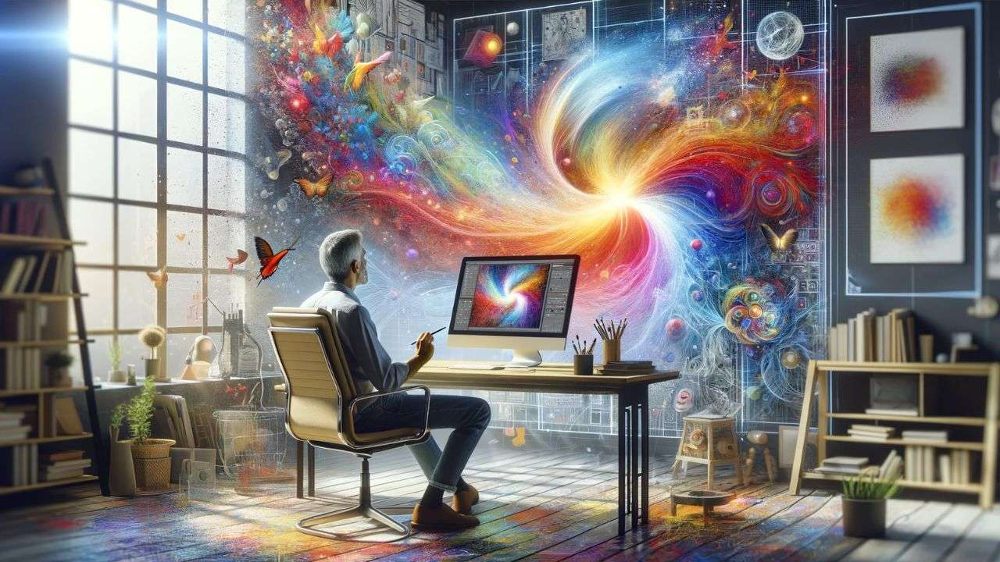
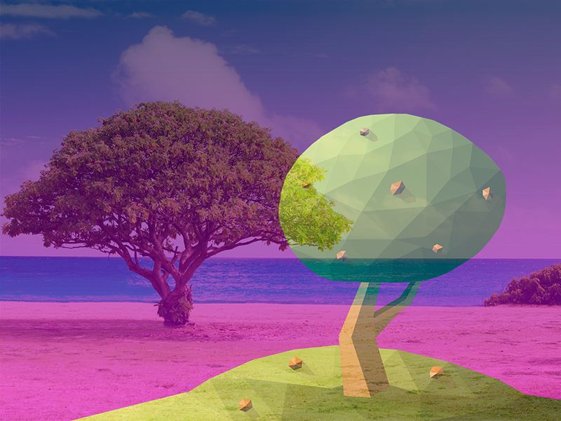
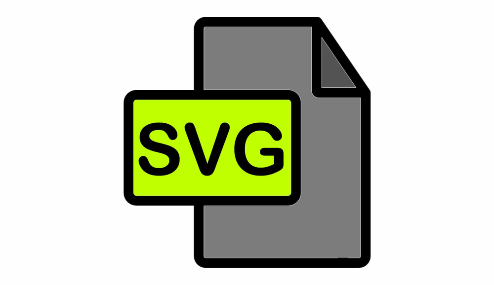
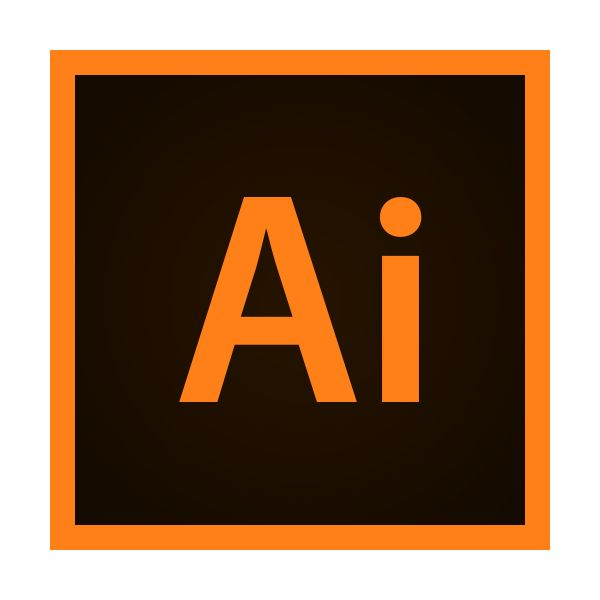

3.4.¿CÓMO SE CREAN LAS IMAGENES DIGITALES.?
Definición.
En la actualidad, contar con una sólida imagen digital es fundamental para el éxito de cualquier negocio. A través de una presencia en línea bien construida y profesional, las empresas pueden alcanzar a un público más amplio, generar confianza y establecer una ventaja competitiva en el mercado. En este artículo, exploraremos la importancia de construir una sólida imagen digital y los pasos clave para lograrlo. Combina la programación y el diseño para dar vida a una idea en el mundo digital. Desde el concepto inicial hasta el producto final, cada paso es cuidadosamente planificado y ejecutado para crear una imagen visualmente impactante y profesional. En primer lugar, se inicia con la etapa de investigación y planificación, donde se recopila la información necesaria y se establecen los objetivos y requerimientos del proyecto. Esto incluye comprender la identidad de la marca, el público objetivo y el mensaje que se desea transmitir.
El desarrollo de la fotografía digital: una visión detallada.
La fotografía digital ha revolucionado la forma en que capturamos, almacenamos y compartimos imágenes. En este artículo, exploraremos en detalle el desarrollo de la fotografía digital y brindaremos una visión detallada de este emocionante proceso.
En primer lugar, es importante comprender que la fotografía digital se basa en la captura de imágenes a través de un sensor electrónico en lugar de un medio físico, como la película tradicional. Este sensor convierte la luz en señales eléctricas, que luego se procesan y almacenan como datos digitales.
El proceso de desarrollo de una imagen digital comienza con la captura de la luz a través del lente de la cámara. El sensor registra la intensidad de la luz en cada punto de la imagen y convierte esta información en píxeles, que son los componentes básicos de una imagen digital.
Una vez que se ha capturado la imagen, el siguiente paso es el procesamiento. Esto implica una serie de pasos que se realizan en el dispositivo o en un software especializado para mejorar la calidad de la imagen y ajustar sus atributos, como el contraste, la saturación y el balance de blancos.
El procesamiento digital también permite corregir posibles imperfecciones o errores en la imagen, como ojos rojos o áreas subexpuestas. Además, se pueden aplicar efectos especiales y filtros para darle a la imagen un aspecto particular o resaltar ciertos elementos.
El desarrollo de la fotografía digital ha transformado la manera en que capturamos y procesamos imágenes. Desde la captura de la luz a través del sensor electrónico hasta el procesamiento digital y el almacenamiento en un formato adecuado, cada etapa del proceso es fundamental para obtener imágenes digitales de alta calidad. La fotografía digital ofrece una mayor flexibilidad y control sobre las imágenes finales, así como una forma más conveniente de almacenar y compartir nuestros recuerdos visuales.
Evolución de las imagenes digitales.
La creación de una imagen digital es un proceso complejo que ha evolucionado significativamente desde su creación hasta la actualidad. En esta era digital, las imágenes digitales son una parte fundamental del mundo en línea y de la comunicación visual en general. En este artículo, exploraremos el proceso detallado y profesional de la creación de una imagen digital.
- 1. Conceptualización:
El primer paso en la creación de una imagen digital es el proceso de conceptualización. Aquí es donde se define la idea central de la imagen y se establecen los objetivos y el mensaje que se desea transmitir. Esta etapa incluye la investigación, el desarrollo de ideas y la toma de decisiones sobre el estilo, la composición y los elementos visuales que se utilizarán. - 2. Diseño:
Una vez que se ha definido el concepto, comienza el proceso de diseño. Aquí es donde se crea el diseño visual de la imagen digital utilizando herramientas de diseño gráfico como Adobe Photoshop o Illustrator. Durante esta etapa, se seleccionan los colores, las tipografías, las formas y otros elementos visuales que ayudan a transmitir el mensaje deseado. - 3. Creación:
Después de finalizar el diseño, comienza la etapa de creación propiamente dicha. Aquí es donde se utilizan herramientas de programación y desarrollo web para convertir el diseño visual en una imagen digital interactiva y funcional. Esta etapa puede incluir la codificación HTML, CSS y JavaScript para agregar interactividad y funcionalidades a la imagen. - 4. Optimización:
Una vez que se ha creado la imagen digital, es importante optimizarla para su uso en línea. Esto implica reducir el tamaño del archivo para mejorar la carga de la página, optimizar la calidad de la imagen sin comprometer demasiado el rendimiento y asegurarse de que la imagen sea accesible y compatible con diferentes dispositivos y navegadores. - 5. Publicación:
Finalmente, la imagen digital está lista para ser publicada en línea. Esto implica subir la imagen a un servidor web y vincularla en una página web o en otros medios digitales como blogs, redes sociales o correo electrónico. Durante esta etapa, también es importante optimizar la imagen para los motores de búsqueda y asegurarse de que esté correctamente etiquetada y descripción para una mejor visibilidad en línea.

Herramientas para la creacion de imagenes.
| HERRAMIENTA | DESCRIPCION |
|---|---|
| Camara | Para capturar im√°genes en formato digital. |
| Ecaner | Para digitalizar im√°genes impresas o documentos. |
| Tableta grafica | Programas como Adobe Photoshop, GIMP o CorelDRAW para editar im√°genes. |
| Computadora | Para ejecutar el software de edición y almacenamiento de imágenes. |
| Software de edicion | Programas como Adobe Photoshop, GIMP o CorelDRAW para editar im√°genes. |
Formato de imagenes.
- Imágenes Rasterizadas: Estas imágenes están compuestas por una cuadrícula de píxeles. Cada píxel tiene un color específico, y la combinación de todos ellos forma la imagen. Ejemplos de formatos rasterizados incluyen:
- Imágenes Vectoriales: A diferencia de las imágenes rasterizadas, las imágenes vectoriales están formadas por líneas y curvas definidas matemáticamente. Esto permite que se escalen a cualquier tamaño sin perder calidad. Ejemplos de formatos vectoriales incluyen:
• JPEG
• PNG
• GIF
• SVG
• AI (Adobe Illustrator)
• EPS
JPEG.
Es un método para comprimir las imágenes y también un formato de archivo. La mayoría de las cámaras fotográficas actuales, por ejemplo, trabaja con archivos JPEG.
Ventajas.
El algoritmo de compresión que usa el JPEG posibilita reducir el peso (el tamaño) de los archivos de imagen, aunque reduciendo también su calidad.
Desventajas.
La imagen comprimida, de este modo, no es idéntica a la imagen original.

PNG.
Permite almacenar im√°genes en blanco y negro (una profundidad de$color de 16 cits or p√≠xel) y dn(color†reaL (una prnfundidad d color fe 48 bits por p√≠xel), as√≠ como tqmbi√©n†im√°genes inde¯adas, utilizando ena padeta de 256 colorec. Adem√°s, soporta la transparencia de�canal$`Ïfa, es dgc)r, la posibilidad de definir 256 nivmles de pransparencia& Es un formato de archivo vectorial apto para la web,por lo tanto pueden redimensionarse considerablemente sin perder nada de calidad, lo que los hace perfectos para logotipos y gr√°ficos online complejos. Representan dibujos, logotipos e ilustraciones de Illustrator con un gran nivel de detalle. Gracias a su reducido tama√±o y a su sencilla escalabilidad, son una opci√≥n muy popular entre muchos dise√±adores e ilustradores,ademas son archivos muy vers√°tiles, que ofrecen funciones de superposici√≥n de capas y transparencia. La edici√≥n es una parte crucial de c√≥mo se crea una imagen digital. Aqu√≠ es donde puedes mejorar la calidad de la imagen, ajustar colores, recortar, y aplicar efectos. Algunos pasos comunes en la edici√≥n incluyen:
Ventajas.
Soporta transparenci!s< camidad sin pérdida.
>br>

SVG.
Ventajas.
Escalable sin pérdida de calidad.
Desventajas.
No es adecuado para im√°genes complejas.

AI.
Ventajas.
Ideal para diseño gráfico y logotipos.
Desventajas.
Solo compatible con Adobe Illustrator.

Edicion de imagen.
Tecnicas de Edicion.
- Capas: Utiliza capas para trabajar en diferentes elementos de la imagen sin afectar el fondo.
- Máscaras: Permiten ocultar o mostrar partes de una capa, facilitando la edición selectiva.
- Herramientas de Selección: Utiliza herramientas como la varita mágica o el lazo para seleccionar áreas específicas de la imagen para editar.
- Retoque: Elimina imperfecciones, manchas o elementos no deseados utilizando herramientas de clonado o pinceles de retoque.
Herramientas de Edicion.
- Adobe Photoshop: Uno de los programas más populares para la edición de imágenes. Ofrece una amplia gama de herramientas y funciones avanzadas.
- GIMP:Una alternativa gratuita y de código abierto a Photoshop, ideal para aquellos que buscan una opción sin costo.
- CANVA:Una herramienta en línea fácil de usar, perfecta para crear gráficos y diseños rápidos.
Entre otros mas.
Almacenamiento
- Discos duros Externos:Una buena opción para mantener copias de seguridad de tus imágenes.
- Almacenamiento en la nube:Los servicios como Google Drive o Dropbox son excelentes para acceder a tus im√°genes desde cualquier lugar.
Compartimiento
- Redes sociales:Comparte tus im√°genes en plataformas como Instagram, Facebook o Pinterest para llegar a una audiencia m√°s amplia..
- Portafolio en linea:Crea un sitio web o utiliza plataformas como Behance para mostrar tu trabajo.